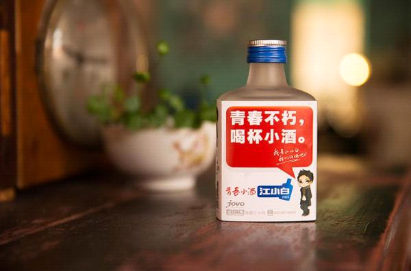
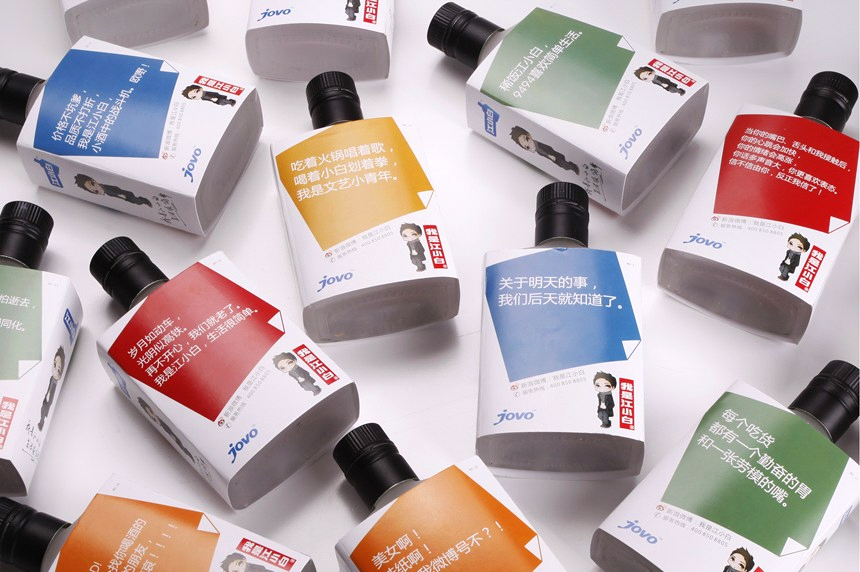
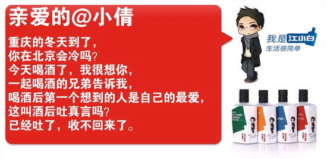
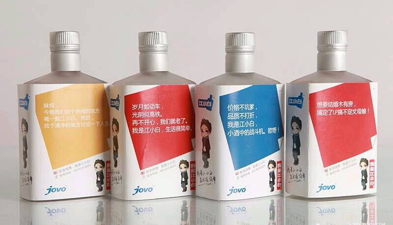

传统的产品定位依靠产品概念，功能和产品应用场景来进行差异化的区隔，这在过去多年的市场发展中被证明是一种有效的营销策略，也被绝大多数品牌或产品所运用。保洁旗下的三大洗发水品牌：飘柔主打柔顺，海飞丝主打去屑，沙宣主打养护，通过功能的区隔，这三款产品都成了知名品牌，明星产品，至今仍旧长盛不衰，被多少策划人和企业奉为营销的经典案例，也让以后更多的品牌（产品）操盘者从这一维度来进行市场运作，也造就了很多成功的品牌。
但是随着产品之间的差异越来越小，这种传统的，依靠某些较为深层次概念和差异化的产品定位越来越难以精准的捕获目标人群，难以形成明显的品牌或产品区隔，因为过多的同类产品让这种边缘逐渐变得模糊化，而消费者在较短的时间内是难以明确了解这种差别的，很容易被其他产品所干扰，与此同时，品牌也需为此而支付更多的推广费用，但是还无法保证其推广的效果，这对品牌操盘者提出了更高的要求。
在 产品竞争相对不那么激烈的时代，一个产品往往成为一个品类的代表，即便进入商品经济发达的二十一世纪，仍然有过成功的案例，这些品牌或产品不论是通过概念提炼，需求开发和消费者教育，反正也成就了一批国内品牌。但是，我们从当前的商业实践来看，产品创新将变得越来越难（尤其是那些拥有比较成熟的产品类别和体系），而商业创新更多的是模式的创新，在这种环境下，产品的作用将变得越来越微弱。
但是，对于传统那些做产品的企业或品牌来说，不断成长与分化的消费者，不断诞生的新消费需求正是他们新的机会，因为我们永远无法在当下洞察所有的用户需求，那么在我们的洞察之外的用户需求未被满足，如何发掘这些需求并满足，这就是机会，只是需要考虑的是这个需求程度多高，群体多大而已。
通常大多数的品牌或产品都希望把更多的人群圈定为自己的目标消费者，所以，这些品类或创新通常不被看好或认为不成其为一个品类，因为没有足够大的市场，即便有自己的目标消费群，那也只能是在一个极小的圈子里传播，似乎难以有大的作为。但是，不要忘记去研究你的用户，用户是被教育出来的，需求也是可以扩散和放大的，因为在今天，绝大多数刚需大市场已经被发掘出来并形成了成熟的市场，唯有通过细分与创新，才有新的市场机会。
在市场竞争激烈如斯的今天，成功的策划犹如戴着镣铐在鸡蛋上跳舞，但是，这并不能阻止品牌策划者们的前赴后继，各种花样层出不穷，脑洞大开，在为行业增添了不少热闹的同时，也给我们业内人士带来了某些思考和启发。
江小白青春屌丝文艺小酒
在国内传统的白酒市场，竞争尤其激烈，品牌推广费用每年动辄上亿，各品牌为争得一席市场地位各出奇招，费尽心机。但是，江小白却以互联网为契机成功进入这个红海市场，并在各大品牌之间硬生生的切出来属于自己的一块市场，不得不说是一次成功的策划。但我们探究其中的原因，最后还是绕不开产品定位这个话题，江小白的成功可以说是产品定位的精准以及后期围绕该定位进行的系列传播推广的成功。
扩大消费群体并切割人群----传统白酒的消费人群一般属于年纪稍大一点的人群，但是江小白告诉年轻的人群，白酒不是年长者的专利，年轻人也可以有自己专属的白酒。这实际上是在教育年轻消费者，同时将他们模糊不清的、潜在的需求明确化。年轻消费者一看，哦，说得真是对极了，一下子就把他们潜在的需求发掘出来了，接下来把酒卖给他们自然也就顺理成章了。

形象创新区隔传统白酒----虽然你是定位年轻人喝的白酒，但是你本质上还是白酒啊，你如何让消费者在诸多白酒中一下子发现你呢？
所以，江小白颠覆了传统白酒的包装和风格，将原本很传统的中国白酒做成了一款既时尚又充满创意的产品，以符合年轻群体的包装形象拉近了与消费者的距离。更重要的是，这种形象上的创新具有明显的区隔性，它能够保证江小白无论在何种渠道，都能让消费者发现与其他白酒的不同，不仅使得传播成本大大降低，也让其产品形象更容易深入人心。

互联网传播聚集人气扩大口碑----我们知道，定位成功的产品不在少数，但是为什么很多产品却没有因此而成为知名的品牌呢？因为缺乏后期的推广，或是推广策略的失误，白白丧失了成为品牌的机会。
江小白的品牌推广依靠的是线上的互联网思维，因为其人群与互联网有天然的联系和亲近感，所以，在最接近用户的地方做推广，效果是最好的。其创造的“江小白”这个卡通的形象，再配合创意十足的文案和段子，将用户的各种心理和生活场景描述出来，让用户觉得这个品牌太了解我了，直接就击中了用户的内心，所以赢得了用户的认同，因而很快就在互联网上传播开来。


从江小白的成功我们可以看出，这是一个产品定位的典型案例，在今天，产品定位的差异化将越来越需要通过更多的方式和手段来才能实现，创新的思维将在未来更多的产品和品牌上体现，而消费需求的升级和推陈出新也将为市场创造更多的机会，但是，成为全国性的，覆盖多数人群的大品牌将会越来越难。而我们期待的是，在未来的国内市场，能够多一些有个性的品牌，细分领域的品牌，为国内市场增添更多的可能。

济南海右博纳品牌营销咨询有限公司
Copyright 2001-2019 All Rights Reserved Sivibrand.
王伟品牌顾问微信